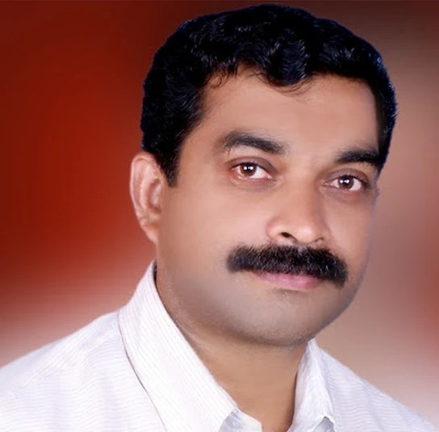

E-SERVICES CSC

Welcome to eServices CSC Kayalode, your premier destination for hassle-free access to essential government services in Kannur district, Kerala. Located in the heart of Kayalode, our CSC center is committed to providing efficient and reliable assistance for a wide range of needs, including Aadhaar enrollment and updates, PAN card applications, passport services, bill payments, and more. With our knowledgeable staff and dedication to customer satisfaction, we strive to make bureaucratic processes simple and convenient, saving you time and effort. Beyond our core services, we also offer digital literacy programs and guidance on accessing government portals, empowering individuals to navigate the digital landscape with confidence. Join us in our mission to bridge the digital divide and foster community engagement at eServices Kayalode.